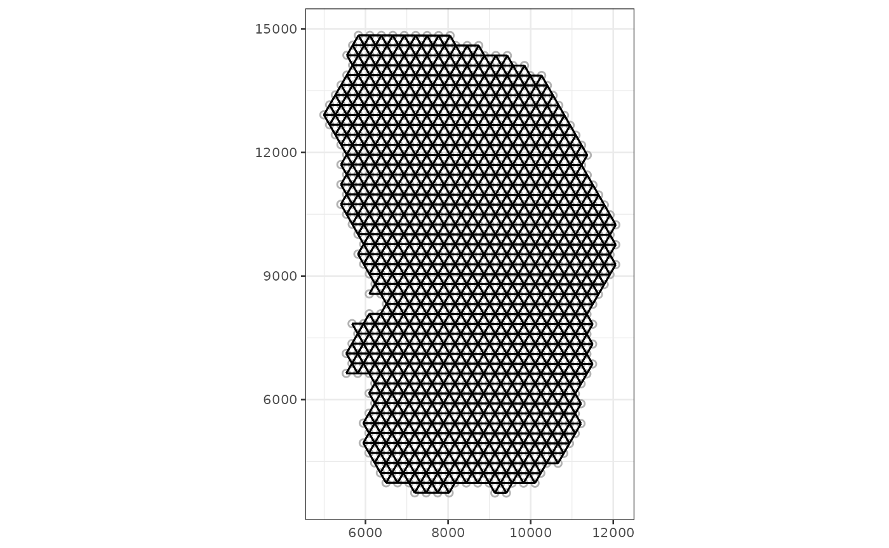

library(Voyager)
library(SpatialFeatureExperiment)
library(scater)
#> Loading required package: SingleCellExperiment
#> Loading required package: SummarizedExperiment
#> Loading required package: MatrixGenerics
#> Loading required package: matrixStats
#>
#> Attaching package: 'MatrixGenerics'
#> The following objects are masked from 'package:matrixStats':
#>
#> colAlls, colAnyNAs, colAnys, colAvgsPerRowSet, colCollapse,
#> colCounts, colCummaxs, colCummins, colCumprods, colCumsums,
#> colDiffs, colIQRDiffs, colIQRs, colLogSumExps, colMadDiffs,
#> colMads, colMaxs, colMeans2, colMedians, colMins, colOrderStats,
#> colProds, colQuantiles, colRanges, colRanks, colSdDiffs, colSds,
#> colSums2, colTabulates, colVarDiffs, colVars, colWeightedMads,
#> colWeightedMeans, colWeightedMedians, colWeightedSds,
#> colWeightedVars, rowAlls, rowAnyNAs, rowAnys, rowAvgsPerColSet,
#> rowCollapse, rowCounts, rowCummaxs, rowCummins, rowCumprods,
#> rowCumsums, rowDiffs, rowIQRDiffs, rowIQRs, rowLogSumExps,
#> rowMadDiffs, rowMads, rowMaxs, rowMeans2, rowMedians, rowMins,
#> rowOrderStats, rowProds, rowQuantiles, rowRanges, rowRanks,
#> rowSdDiffs, rowSds, rowSums2, rowTabulates, rowVarDiffs, rowVars,
#> rowWeightedMads, rowWeightedMeans, rowWeightedMedians,
#> rowWeightedSds, rowWeightedVars
#> Loading required package: GenomicRanges
#> Loading required package: stats4
#> Loading required package: BiocGenerics
#>
#> Attaching package: 'BiocGenerics'
#> The following objects are masked from 'package:stats':
#>
#> IQR, mad, sd, var, xtabs
#> The following objects are masked from 'package:base':
#>
#> anyDuplicated, append, as.data.frame, basename, cbind, colnames,
#> dirname, do.call, duplicated, eval, evalq, Filter, Find, get, grep,
#> grepl, intersect, is.unsorted, lapply, Map, mapply, match, mget,
#> order, paste, pmax, pmax.int, pmin, pmin.int, Position, rank,
#> rbind, Reduce, rownames, sapply, setdiff, sort, table, tapply,
#> union, unique, unsplit, which.max, which.min
#> Loading required package: S4Vectors
#>
#> Attaching package: 'S4Vectors'
#> The following objects are masked from 'package:base':
#>
#> expand.grid, I, unname
#> Loading required package: IRanges
#> Loading required package: GenomeInfoDb
#> Loading required package: Biobase
#> Welcome to Bioconductor
#>
#> Vignettes contain introductory material; view with
#> 'browseVignettes()'. To cite Bioconductor, see
#> 'citation("Biobase")', and for packages 'citation("pkgname")'.
#>
#> Attaching package: 'Biobase'
#> The following object is masked from 'package:MatrixGenerics':
#>
#> rowMedians
#> The following objects are masked from 'package:matrixStats':
#>
#> anyMissing, rowMedians
#> Loading required package: scuttle
#> Loading required package: ggplot2
library(scran)
library(SFEData)
library(sf)
#> Linking to GEOS 3.8.0, GDAL 3.0.4, PROJ 6.3.1; sf_use_s2() is TRUE
library(ggplot2)
library(scales)
library(patchwork)
library(sparseMatrixStats)
library(BiocParallel)
library(bluster)
theme_set(theme_bw(10))Introduction
In single cell RNA-seq (scRNA-seq), data and metadata can be
represented with SingleCellExperiment or
Seurat objects, and basic exploratory data analyses and
visualization performed with scater, scran,
and scuttle, or Seurat. The
SpatialFeatureExperiment package and S4 class extending
SpatialExperiment and SingleCellExperiment
brings EDA methods for vector spatial data to spatial transcriptomics.
Voyager to SpatialFeatureExperiment is just
like scater, scran, and scuttle
to SingleCellExperiment, implementing basic exploratory
spatial data analysis (ESDA) and visualization methods. Non-spatial
statistical methods often assume that the samples (cells, spots) are
independent, which is not the case in spatial data, where nearby samples
tend to be more similar (i.e. spatial autocorrelation). Much of ESDA is
dedicated to spatial autocorrelation, such as finding whether it is
present, and if so what’s its length scale.
This vignette gives an overview of these spatial EDA methods,
functionalities of the Voyager package, and applications of
the SpatialFeatureExperiment class with a published Visium
dataset.
Dataset
The dataset used in this vignette comes from Large-scale
integration of single-cell transcriptomic data captures transitional
progenitor states in mouse skeletal muscle regeneration. Notexin was
injected into the tibialis anterior muscle to induce injury, and the
healing muscle was collected 2, 5, and 7 days post injury for Visium.
The dataset here is from the 2 day timepoint. The dataset is in a
SpatialFeatureExperiment (SFE) object.
The gene count matrix was directly downloaded from GEO. All 4992 spots, whether in tissue or not, are included. The H&E image was used for nuclei and myofiber segmentation. A subset of nuclei from randomly selected regions from all 3 timepoints were manually annotated to train a StarDist model to segment the rest of the nuclei, and the myofibers were all manually segmented.
Tissue boundary, nuclei, myofiber, and Visium spot polygons are
stored as sf data frames in the SFE object. See the
vignette of the SpatialFeatureExperiment for more details
on the structure of the SFE object. The SFE object of this dataset is
provided in the SFEData package.
(sfe <- McKellarMuscleData("full"))
#> snapshotDate(): 2022-07-15
#> see ?SFEData and browseVignettes('SFEData') for documentation
#> loading from cache
#> class: SpatialFeatureExperiment
#> dim: 15123 4992
#> metadata(0):
#> assays(1): counts
#> rownames(15123): ENSMUSG00000025902 ENSMUSG00000096126 ...
#> ENSMUSG00000064368 ENSMUSG00000064370
#> rowData names(6): Ensembl symbol ... vars cv2
#> colnames(4992): AAACAACGAATAGTTC AAACAAGTATCTCCCA ... TTGTTTGTATTACACG
#> TTGTTTGTGTAAATTC
#> colData names(12): barcode col ... prop_mito in_tissue
#> reducedDimNames(0):
#> mainExpName: NULL
#> altExpNames(0):
#> spatialCoords names(2) : imageX imageY
#> imgData names(1): sample_id
#>
#> Geometries:
#> colGeometries: spotPoly (POLYGON)
#> annotGeometries: tissueBoundary (POLYGON), myofiber_full (POLYGON), myofiber_simplified (POLYGON), nuclei (POLYGON), nuclei_centroid (POINT)
#>
#> Graphs:
#> Vis5A:Low resolution H&E image of the tissue section
Exploratory data analysis
Spots in tissue
While the example dataset has all Visium spots whether on tissue or not, only spots that intersect tissue will be used for further analyses.
names(colData(sfe))
#> [1] "barcode" "col" "row" "x" "y" "dia"
#> [7] "tissue" "sample_id" "nCounts" "nGenes" "prop_mito" "in_tissue"Total UMI counts (nCounts), number of genes detected per
spot (nGenes), and proportion of mitochondrially encoded
counts (prop_mito) have been precomputed and are in
colData(sfe). The plotSpatialFeature function
plots any gene, colData values, and geometry attributes in
colGeometry and annotGeometry in space. The
Visium spots are plotted as polygons reflecting their actual size
relative to the tissue, rather than points as in other packages that
plot Visium data. Behind the scene, geom_sf is used to plot
the geometries.
The tissue boundary was found by thresholding the H&E image and
removing small polygons that are most likely debris. The
in_tissue column of colData(sfe) indicates
which Visium spot polygon intersects the tissue polygon; this can be
found with SpatialFeatureExperiment::annotPred() but is
beyond the scope of this vignette.
While scran is used for data normalization here for
demonstration purposes and to make the data more normally distributed,
we do not mean that it is the best practice in normalizing spatial
transcriptomics data, as we don’t know what the best practice really
should be. As seen in the nCounts plot in space above,
spatial autocorrelation is evident. In Visium, reverse transcription
occurs in situ on the spots, but PCR amplification occurs after the cDNA
is dissociated from the spots. Then artifacts introduced from the
amplification step would not be spatial. Spatial artifacts may arise
from diffusion of transcripts to adjacent spots and tissue
permeablization. However, given how the total counts seem to correspond
to histological regions, the total counts may have a biological
component and hence should not be treated as a technical artifact to be
normalized away as in scRNA-seq data normalization methods.
sfe_tissue <- sfe[,colData(sfe)$in_tissue]
sfe_tissue <- sfe_tissue[rowSums(counts(sfe_tissue)) > 0,]
clusters <- quickCluster(sfe_tissue)
sfe_tissue <- computeSumFactors(sfe_tissue, clusters=clusters)
#> Warning in (function (x, sizes, min.mean = NULL, positive = FALSE, scaling =
#> NULL) : encountered non-positive size factor estimates
sfe_tissue <- logNormCounts(sfe_tissue)Myofiber and nuclei segmentation polygons are available in this
dataset, in the field annotGeometries. Myofibers were
manually segmented, and nuclei were segmented with StarDist,
trained with a manually segmented subset.
annotGeometryNames(sfe_tissue)
#> [1] "tissueBoundary" "myofiber_full" "myofiber_simplified"
#> [4] "nuclei" "nuclei_centroid"From myofibers and nuclei to Visium spots
The plotSpatialFeature function can also be used to plot
attributes of geometries, i.e. the non-geometry columns in the
sf data frames in the rowGeometries,
colGeometries, or annotGeometries fields in
the SFE object. For rowGeometries and
colGeometries, such columns associated with the
sf data frames rather than rowData or
colData are allowed because one can specify how these
columns associate with the geometries (see st_agr
and documentation
of st_sf). When an attribute of an
annotGeometry is plotted along side gene expression or
colData or colGeometry attribute, the
annotGeometry attribute is plotted with a different color
palette to distinguish from the column associated values.
Here, from the annotGeometries, the myofiber polygons
are plotted, colored by cross section area as observed in this tissue
section. The aes_use argument is set to color
rather than fill (default for polygons) to only plot the
Visium spot outlines to make the myofiber polygons more visible. The
fill argument is set to NA to make the Visium
spots look hollow, and the size argument controls the
thickness of the outlines. The annot_aes argument specifies
which column in the annotGeometry to use to specify the
values of an aesthstic, just like aes in
ggplot2 (aes_string to be precise, since
tidyeval is not used here). The annot_fixed
argument (not used here) can set the fixed size, alpha, color, and etc.
for the annotGeometry.
plotSpatialFeature(sfe_tissue, features = "nCounts",
colGeometryName = "spotPoly",
annotGeometryName = "myofiber_simplified",
annot_aes = list(fill = "area"),
aes_use = "color", size = 0.5, fill = NA)The larger myofibers seem to have fewer total counts, possibly because the larger size of these myofibers dilute the transcripts. If this is the case, then data normalization would be relevant to correct for this.
With SpatialFeatureExperiment, we can find the number of
myofibers and nuclei that intersect each Visium spot. The predicate can
be anything
implemented in sf, so for example, the number of nuclei
fully covered by each Visium spot can also be found. The default
predicate is st_intersects.
colData(sfe_tissue)$n_myofibers <-
annotNPred(sfe_tissue, colGeometryName = "spotPoly",
annotGeometryName = "myofiber_simplified")We can also find the intersection geometries between each myofiber and Visium spot, and compute their areas.
myofiber_in_spot <- annotOp(sfe_tissue, colGeometryName = "spotPoly",
annotGeometryName = "myofiber_simplified")
colData(sfe_tissue)$prop_myofiber <-
st_area(myofiber_in_spot) / st_area(spotPoly(sfe_tissue))
plotSpatialFeature(sfe_tissue, features = c("n_myofibers", "prop_myofibers"),
colGeometryName = "spotPoly")
The injury site infiltrated with immune cells have more nuclei; this is apparent from the H&E image, but is quantified here.
There is no one to one mapping between Visium spots and myofibers.
However, we may want to relate attributes of myofibers to gene
expression detected at the Visium spots. One way to do so is to
summarize the attributes of all myofibers that intersect (or choose
another better predicate implemented in sf) each spot, such
as to calculate the mean, median, or sum. This can be done with the
annotSummary function in
SpatialFeatureExperiment. The default predicate is
st_intersects, and the default summary function is
mean.
colData(sfe_tissue)$mean_myofiber_area <-
annotSummary(sfe_tissue, "spotPoly", "myofiber_simplified",
annotColNames = "area")[,1] # it always returns a data frame
# The gray spots don't intersect any myofiber
plotSpatialFeature(sfe_tissue, "mean_myofiber_area", "spotPoly")Now we can see how the mean area of myofibers intersecting each Visium spot relates to other aspects of the spots such as total counts and gene expression.
The NAs are for spots not intersecting any myofibers, e.g. those in the inflammatory region. There seem to be two clusters: spots with smaller mean myofiber area and larger total counts, and spots with larger mean myofiber area and smaller total counts. Indeed, spots with smaller mean myofiber area tend to have a larger number of myofibers; that the myofibers are smaller is the reason why there are more of them intersecting each spot.
plotColData(sfe_tissue, x = "nCounts", y = "nGenes", colour_by = "mean_myofiber_area")
plotColData(sfe_tissue, x = "nCounts", y = "nGenes", colour_by = "n_myofibers")
Mean myofiber area and number of myofibers per spot seem to be related to the two branches in the nGenes vs. nCounts plot. The upper branch includes the inflamed injury site with lots of immune cells and hence nuclei and devoid of myofibers and the adjacent region with larger myofibers.
Myofiber types
Marker genes: Myh7 (Type I, slow twitch, aerobic), Myh2 (Type IIa, fast twitch, somewhat aerobic), Myh4 (Type IIb, fast twitch, anareobic), Myh1 (Type IIx, fast twitch, anaerobic), from this protocol
markers <- c(I = "Myh7", IIa = "Myh2", IIb = "Myh4", IIx = "Myh1")First look at Type I myofibers. Again, this is a fast twitch muscle,
so we don’t expect many slow twitch Type I myofibers. Row names in
sfe_tissue are Ensembl IDs, to avoid ambiguity as sometimes
multiple Ensembl IDs have the same gene symbol and some genes have
aliases in symbol. However, gene symbols are shorter and more human
readable than Ensembl IDs, and are nice to show on plots. In the
plotSpatialFeature function and other functions in
Voyager, even when the actual row names are Ensembl IDs,
the features argument can take gene symbols if there is a
column called “symbols” in rowData(sfe), where the function
converts the gene symbols to Ensembl IDs. By default, gene symbols are
shown on the plot, but the show_symbol argument can be set
to FALSE to show Ensembl IDs instead. If one gene symbol
matches multiple Ensembl IDs in the dataset, then a warning will be
given.
The exprs_values argument specifies the assay to use,
which is by default “logcounts”, i.e. the log normalized data. Again,
this default may or may not be best practice given that total UMI counts
may have biological relevance in spatial data. Therefore we are plotting
both the raw counts and the log normalized counts here.
# Function specific for this vignette, with some hard coded values
plot_counts_logcounts <- function(sfe, feature) {
p1 <- plotSpatialFeature(sfe, feature, "spotPoly",
annotGeometryName = "myofiber_simplified",
annot_aes = list(fill = "area"), aes_use = "color",
fill = NA, size = 0.5, show_symbol = TRUE,
exprs_values = "counts") +
ggtitle("Raw counts")
p2 <- plotSpatialFeature(sfe, feature, "spotPoly",
annotGeometryName = "myofiber_simplified",
annot_aes = list(fill = "area"), aes_use = "color",
fill = NA, size = 0.5, show_symbol = TRUE,
exprs_values = "logcounts") +
ggtitle("Log normalized counts")
p1 + p2 +
plot_annotation(title = feature)
}
plot_counts_logcounts(sfe_tissue, markers["I"])
Type IIa myofibers
plot_counts_logcounts(sfe_tissue, markers["IIa"])
Type IIa myofibers also tend to be clustered together on left side of the tissue.
gene_id <- rownames(sfe_tissue)[rowData(sfe_tissue)$symbol == markers["IIa"]]
plotColData(sfe_tissue, x = "nCounts", y = "prop_mito",
colour_by = gene_id, by_exprs_values = "logcounts")
Spots with Type IIa myofibers tend to have higher proportion of mitochondrial counts, mostly in the upper cluster in this plot. However, some of these spots are in the lower cluster. As Visium spots can intersect with multiple myofibers, these spots might have both Type IIa and some more anaerobic myofibers.
plotColData(sfe_tissue, x = "mean_myofiber_area", y = "prop_mito",
colour_by = gene_id, by_exprs_values = "logcounts")
#> Warning: Removed 36 rows containing missing values (geom_point).
Plotting proportion of mitochondrial counts vs. mean myofiber area, we also see two clusters, one with higher proportion of mitochondrial counts and smaller area, and another with lower proportion of mitochondrial counts and on average slightly larger area. Type IIa myofibers tend to have small area and larger proportion of mitochondrial counts.
plot_counts_logcounts(sfe_tissue, markers["IIb"])While the raw counts suggest that Type IIb myofibers tend to aggregate at the top region of this section and away from Type IIa myofibers, data normalization made expression of Myh4 seem ubiquitous even in regions without myofibers.
gene_id <- rownames(sfe_tissue)[rowData(sfe_tissue)$symbol == markers["IIb"]]
plotColData(sfe_tissue, x = "nCounts", y = "prop_mito",
colour_by = gene_id, by_exprs_values = "counts")
In raw counts, spots with high Myh4 expression, indicating Type IIb, also tend to have somewhat high mitochondrial count proportion (still in the upper cluster), but not as high as Type IIa.
plotColData(sfe_tissue, x = "mean_myofiber_area", y = "prop_mito",
colour_by = gene_id, by_exprs_values = "counts")
#> Warning: Removed 36 rows containing missing values (geom_point).
Type IIb myofibers tend to be larger than type IIa myofibers.
Spatial neighborhood graphs
A spatial neighborhood graph is required to compute spatial
dependency metrics such as Moran’s I and Geary’s C. The
SpatialFeatureExperiment package wraps methods in
spdep to find spatial neighborhood graphs, which are stored
within the SFE object (see spdep documentation for gabrielneigh,
knearneigh,
poly2nb,
and tri2nb).
The Voyager package then uses these graphs for spatial
dependency analyses, again based on spdep in this first
version, but methods from other geospatial packages, some of which also
use the spatial neighborhood graphs, may be added later as needed.
For Visium, where the spots are in a hexagonal grid, the spatial
neighborhood graph is straightforward. However, for spatial technologies
with single cell resolution (e.g. MERFISH) and in this dataset, the
myofibers and nuclei, many different methods can be used to find the
spatial neighborhood graph. Here for myofibers, the method “poly2nb”
identifies myofiber polygons that are physically touch each other.
zero.policy = TRUE will allow singletons or nodes without
neighbors in the graph; in the inflamed region, there are more
singletons. We have not yet benchmarked which spatial neighborhood
method is the “best” in which situation; the particular method used here
is for demonstration purpose and may or may not be best practice.
colGraph(sfe_tissue, "visium") <- findVisiumGraph(sfe_tissue)
annotGraph(sfe_tissue, "myofiber_poly2nb") <-
findSpatialNeighbors(sfe_tissue, type = "myofiber_simplified", MARGIN = 3,
method = "poly2nb", zero.policy = TRUE)The plotColGraph function plots the graph in space
associated with a colGeometry, along with the geometry of
interest.
plotColGraph(sfe_tissue, colGraphName = "visium", colGeometryName = "spotPoly")
Similarly, the plotAnnotGraph function plots the graph
associated with an annotGeometry, along with the geometry
of interest.
plotAnnotGraph(sfe_tissue, annotGraphName = "myofiber_poly2nb",
annotGeometryName = "myofiber_simplified")
There is no plotRowGraph yet since we haven’t worked
with a dataset where spatial graphs related to genes are relevant,
although the SFE object supports row graphs.
Exploratory spatial data analysis
Tobler’s first law of geography:
Everything is related to everything else. But near things are more related than distant things.
All spatial autocorrelation metrics in this package can be computed
directly on a vector or a matrix rather than an SFE object. The user
interface emulates those of dimension reductions in the
scater package (e.g. calculateUMAP that takes
in a matrix or SCE object and returns a matrix, and runUMAP
that takes in an SCE object and adds the results to the
reducedDims field of the SCE object). So
calculate* functions take in a matrix or an SFE object and
directly return the results (format of the results depends on the
structure of the results), while run* functions take in an
SFE object and add the results to the object.
Univariate
In this first version, Voyager only supports univariate
global spatial autocorrelation implemented in spdep for
ESDA: Moran’s I and Geary’s C, permutation testing for Moran’s I and
Geary’s C, Moran plot, and correlograms. In addition, beyond
spdep, Voyager can cluster Moran plots and
correlograms. Plotting functions taking in SFE objects are implemented
to plot the results with ggplot2 and with more
customization options than spdep plotting functions.
To demonstrate spatial autocorrelation in gene expression, top highly
variable genes (HVGs) are used. The HVGs are found with the
scran method.
dec <- modelGeneVar(sfe_tissue)
hvgs <- getTopHVGs(dec, n = 50)Moran’s I
There are several ways to quantify spatial autocorrelation, the most common of which is Moran’s I:
\[ I = \frac{n}{\sum_{i=1}^n \sum_{j=1}^n w_{ij}} \frac{\sum_{i=1}^n \sum_{j=1}^n w_{ij} (x_i - \bar{x})(x_j - \bar{x})}{\sum_{i=1}^n (x_i - \bar{x})^2} \]
Where \(n\) is the number of spots
or locations, \(i\) and \(j\) are different locations, or spots in
the Visium context, \(x\) is a variable
with values at each location, and \(w_{ij}\) is a spatial weight, which can be
inversely proportional to distance between spots or an indicator of
whether two spots are neighbors, subject to various definitions of
neighborhood and whether to normalize the number of neighbors. The
spdep package uses the neighborhood.
Moran’s I takes values between -1 and 1. For positive spatial autocorrelation, i.e. nearby spots tend to be more similar, Moran’s I will be positive. For negative spatial autocorrelation, i.e. nearby spots tend to be more dissimilar, Moran’s I will be negative. When the variable is distributed in space randomly like salt and pepper, then Moran’s I will be around 0. Positive Moran’s I indicates global structure, while negative Moran’s I indicates local structure.
Upon visual inspection, total UMI counts per spot seem to have
spatial autocorrelation. A spatial neighborhood graph is required to
compute Moran’s I, and is specified with the listw
argument. Also, if the metrics are computed for a large number of
features, parallel computing is supported, with
BiocParallel, with the BPPARAM argument.
For matrices, the rows are the features, as in the gene count matrix.
# Directly use vector or matrix, and multiple features can be specified at once
calculateMoransI(t(colData(sfe_tissue)[,c("nCounts", "nGenes")]),
listw = colGraph(sfe_tissue, "visium"))
#> DataFrame with 2 rows and 2 columns
#> I K
#> <numeric> <numeric>
#> nCounts 0.528705 3.00082
#> nGenes 0.384028 3.88036I is Moran’s I, and K is sample kurtosis.
To add the results to the SFE object, specifically for colData:
sfe_tissue <- colDataMoransI(sfe_tissue, features = c("nCounts", "nGenes"),
colGraphName = "visium")
head(colFeatureData(sfe_tissue), 10)
#> DataFrame with 10 rows and 2 columns
#> MoransI_Vis5A K_Vis5A
#> <numeric> <numeric>
#> barcode NA NA
#> col NA NA
#> row NA NA
#> x NA NA
#> y NA NA
#> dia NA NA
#> tissue NA NA
#> sample_id NA NA
#> nCounts 0.528705 3.00082
#> nGenes 0.384028 3.88036For colData, the results are added to
colFeatureData(sfe), and features for which Moran’s I is
not calculated have NA. The column names of featureData
distinguishes between different samples (there’s only one sample in this
dataset), and are parsed by plotting functions.
To add the results to the SFE object, specifically for geometries: Here “area” is the area of the cross section of each myofiber as seen in this tissue section and “eccentricity” is the eccentricity of the ellipse fitted to each myofiber.
# Remember zero.policy = TRUE since there're singletons
sfe_tissue <- annotGeometryMoransI(sfe_tissue,
features = c("area", "eccentricity"),
annotGeometryName = "myofiber_simplified",
annotGraphName = "myofiber_poly2nb",
zero.policy = TRUE)
head(attr(annotGeometry(sfe_tissue, "myofiber_simplified"), "featureData"))
#> DataFrame with 6 rows and 2 columns
#> MoransI_Vis5A K_Vis5A
#> <numeric> <numeric>
#> lyr.1 NA NA
#> area 0.327888 4.95675
#> perimeter NA NA
#> eccentricity 0.110938 3.26913
#> theta NA NA
#> sine_theta NA NAFor a non-geometry column in a colGeometry,
colGeometryMoransI is like
annotGeometryMoransI here, but none of the
colGeometries in this dataset has extra columns.
For gene expression, the logcounts assay is used by
default (use the exprs_values argument to change the
assay), though this may or may not be best practice.
sfe_tissue <- runMoransI(sfe_tissue, features = hvgs, colGraphName = "visium",
BPPARAM = MulticoreParam(2))
rowData(sfe_tissue)[head(hvgs),]
#> DataFrame with 6 rows and 8 columns
#> Ensembl symbol type means
#> <character> <character> <character> <numeric>
#> ENSMUSG00000018893 ENSMUSG00000018893 Mb Gene Expression 2.11118
#> ENSMUSG00000027559 ENSMUSG00000027559 Car3 Gene Expression 2.32632
#> ENSMUSG00000056328 ENSMUSG00000056328 Myh1 Gene Expression 4.82572
#> ENSMUSG00000029304 ENSMUSG00000029304 Spp1 Gene Expression 1.63722
#> ENSMUSG00000033196 ENSMUSG00000033196 Myh2 Gene Expression 0.97476
#> ENSMUSG00000050335 ENSMUSG00000050335 Lgals3 Gene Expression 1.43189
#> vars cv2 MoransI_Vis5A K_Vis5A
#> <numeric> <numeric> <numeric> <numeric>
#> ENSMUSG00000018893 74.1782 16.6428 0.761522 1.80210
#> ENSMUSG00000027559 74.3233 13.7336 0.706457 1.76082
#> ENSMUSG00000056328 302.2385 12.9785 0.727282 2.14464
#> ENSMUSG00000029304 60.1583 22.4430 0.656386 1.72563
#> ENSMUSG00000033196 24.0374 25.2984 0.706747 2.45049
#> ENSMUSG00000050335 48.0739 23.4471 0.652904 1.93371Geary’s C
Another spatial autocorrelation metric is Geary’s C, defined as:
\[ C = \frac{(n-1)}{2\sum_{i=1}^n \sum_{j=1}^n w_{ij}} \frac{\sum_{i=1}^n \sum_{j=1}^n w_{ij}(x_i - x_j)^2}{{\sum_{i=1}^n (x_i - \bar{x})^2}} \]
Geary’s C well below 1 indicates positive spatial autocorrelation, and above 1 indicates negative spatial autocorrelation.
Simply substitute “MoransI” in the names of the functions in the
previous section with “GearysC” to compute Geary’s C for features of
interest and add the results to the SFE object. For example, for
colData
sfe_tissue <- colDataGearysC(sfe_tissue, features = c("nCounts", "nGenes"),
colGraphName = "visium")
head(colFeatureData(sfe_tissue), 10)
#> DataFrame with 10 rows and 3 columns
#> MoransI_Vis5A K_Vis5A GearysC_Vis5A
#> <numeric> <numeric> <numeric>
#> barcode NA NA NA
#> col NA NA NA
#> row NA NA NA
#> x NA NA NA
#> y NA NA NA
#> dia NA NA NA
#> tissue NA NA NA
#> sample_id NA NA NA
#> nCounts 0.528705 3.00082 0.474892
#> nGenes 0.384028 3.88036 0.605797There’s only one column for K since it’s the same for Moran’s I and
Geary’s C. Here both Moran’s I and Geary’s C suggest positive spatial
autocorrelation for nCounts and nGenes.
Permutation testing
Is the spatial autocorrelation statistically significant? The
moran.test function in spdep can give an
analytic p-value but the p-value would not be accurate if the data is
not normally distributed. As gene expression data is generally not
normally distributed and data normalization doesn’t necessarily make the
data that close to a normal distribution, permutation testing is used in
this package to test the significance of Moran’s I and Geary’s C,
wrapping moran.mc
in spdep. Just like Moran’s I, there’s
calculateMoranMC and calculateGearyMC
functions to directly return the results, and
colDataMoranMC, colGeometryMoranMC,
annotGeometryMoranMC, and runMoranMC to add
the results to the SFE object. MC stands for Monte Carlo. The
nsim argument specifies the number of simulations.
Add the results to the SFE object
sfe_tissue <- colDataMoranMC(sfe_tissue, features = c("nCounts", "nGenes"),
colGraphName = "visium", nsim = 100)
head(colFeatureData(sfe_tissue), 10)
#> DataFrame with 10 rows and 10 columns
#> MoransI_Vis5A K_Vis5A GearysC_Vis5A MoranMC_statistic_Vis5A
#> <numeric> <numeric> <numeric> <numeric>
#> barcode NA NA NA NA
#> col NA NA NA NA
#> row NA NA NA NA
#> x NA NA NA NA
#> y NA NA NA NA
#> dia NA NA NA NA
#> tissue NA NA NA NA
#> sample_id NA NA NA NA
#> nCounts 0.528705 3.00082 0.474892 0.528705
#> nGenes 0.384028 3.88036 0.605797 0.384028
#> MoranMC_parameter_Vis5A MoranMC_p.value_Vis5A
#> <numeric> <numeric>
#> barcode NA NA
#> col NA NA
#> row NA NA
#> x NA NA
#> y NA NA
#> dia NA NA
#> tissue NA NA
#> sample_id NA NA
#> nCounts 101 0.00990099
#> nGenes 101 0.00990099
#> MoranMC_alternative_Vis5A MoranMC_method_Vis5A
#> <character> <character>
#> barcode NA NA
#> col NA NA
#> row NA NA
#> x NA NA
#> y NA NA
#> dia NA NA
#> tissue NA NA
#> sample_id NA NA
#> nCounts greater Monte-Carlo simulati..
#> nGenes greater Monte-Carlo simulati..
#> MoranMC_data.name_Vis5A MoranMC_res_Vis5A
#> <character> <list>
#> barcode NA NA
#> col NA NA
#> row NA NA
#> x NA NA
#> y NA NA
#> dia NA NA
#> tissue NA NA
#> sample_id NA NA
#> nCounts x[i, ] \nweights: lis.. 0.000970337,-0.010410652,-0.021168352,...
#> nGenes x[i, ] \nweights: lis.. 0.0242217,0.0348584,0.0274178,...Note that while the test is performed for multiple features, the p-values here are not corrected for multiple hypothesis testing.
The results can be plotted:
plotMoranMC(sfe_tissue, c("nCounts", "nGenes"))By default, the colorblind friendly palette from
dittoSeq is used for categorical variables. The density is
of Moran’s I from the simulations where the values are permuted and
disconnected from spatial locations, and the vertical line is the actual
Moran’s I value. The simulation indicates that the spatial
autocorrelation is significant.
Each function for Moran MC has a Geary’s C equivalent
(e.g. runGearyMC).
sfe_tissue <- colDataGearyMC(sfe_tissue, features = c("nCounts", "nGenes"),
colGraphName = "visium", nsim = 100)
plotMoranMC(sfe_tissue, c("nCounts", "nGenes"), name = "GearyMC")
Also see some myofiber morphological metrics
sfe_tissue <- annotGeometryMoranMC(sfe_tissue,
features = c("area", "eccentricity"),
annotGeometryName = "myofiber_simplified",
annotGraphName = "myofiber_poly2nb",
zero.policy = TRUE, nsim = 100)Specify annotGeometryName to make the
plotMoranMC function look for results in the
annotGeometry of interest.
plotMoranMC(sfe_tissue,
features = c("area", "eccentricity"),
annotGeometryName = "myofiber_simplified")
Here all 4 morphological metrics have positive spatial autocorrelation, but myofiber area is more strongly autocorrelated.
This can also be done to gene expression, again, by default, using the “logcounts” assay.
sfe_tissue <- runMoranMC(sfe_tissue, hvgs[1:5], colGraphName = "visium", nsim = 100)Although the row names of sfe_tissue are actually
Ensembl IDs, the human readable gene symbols are shown in the plots by
default.
plotMoranMC(sfe_tissue, features = hvgs[1:5])
The vertical lines for Car3 and Myh2 overlap but they’re not the same
value (see results of runMoransI above). These genes have
positive spatial autocorrelation that is stronger than total counts.
Correlogram
What’s the length scale of the spatial autocorrelation? In a
correlogram, spatial autocorrelation of higher orders of neighbors
(e.g. second order neighbors are neighbors of neighbors) is calculated
to see how it decays over the orders. In Visium, with the regular
hexagonal grid, order of neighbors is a proxy for distance. For more
irregular patterns such as single cells, different methods to find the
spatial neighbors may give different results. Functions to compute
correlograms wrap sp.correlogram
in spdep, and have the same pattern of
calculate* and run* as the Moran’s I and
permutation test functions, except for the order argument
specifying the maximum order of neighbors.
For colData, Moran’s I correlogram:
sfe_tissue <- runCorrelogram(sfe_tissue, hvgs[1:5], colGraphName = "visium",
order = 10, BPPARAM = MulticoreParam(2))The results can be plotted with plotCorrelogram
plotCorrelogram(sfe_tissue, hvgs[1:5])The error bars are twice the standard deviation of the Moran’s I
value. The standard deviation and p-values (null hypothesis is that
Moran’s I is 0) come from moran.test (for Geary’s C
correlogram, geary.test); these should be taken with a
grain of salt for data that is not normally distributed. The p-values
have been corrected for multiple hypothesis testing across all orders
and features. As usual, . means p < 0.1, * means p < 0.05, **
means p < 0.01, and *** means p < 0.001.
Again, this can be done for Geary’s C, colData,
annotGeometry, and etc. as in Moran’s I and permutation
testing.
Moran scatter plot
In the Moran scatter plot, the x axis is the value itself and the y
axis is the average value of the neighbors. The slope of the fitted line
is Moran’s I. Sometimes clusters appear in this plot, showing different
kinds of neighborhoods for this value. Just like Moran’s I, permutation
testing, and correlogram functions, the functions for Moran scatter plot
also follow the calculate* and run* patterns
and have the same user interface. However, the plot can only be made for
one feature at a time.
For gene expression, to use one gene to demonstrate:
sfe_tissue <- runMoranPlot(sfe_tissue, "Myh1", colGraphName = "visium")
moranPlot(sfe_tissue, "Myh1", graphName = "visium")
There are no singletons here. Some Visium spots have neighbors that don’t express Myh1 but spots that don’t express Myh1 usually have at least some neighbors that do. There are 2 main clusters for spots whose neighbors do express Myh1.
set.seed(29)
clusts <- clusterMoranPlot(sfe_tissue, "Myh1", BLUSPARAM = KmeansParam(2))
moranPlot(sfe_tissue, "Myh1", graphName = "visium", color_by = clusts$Myh1)
Again, plot the clusters in space
colData(sfe_tissue)$Myh1_moranPlot_clust <- clusts$Myh1
plotSpatialFeature(sfe_tissue, "Myh1_moranPlot_clust", colGeometryName = "spotPoly")
Again, this can be done for colData,
annotGeometry, and etc. as in Moran’s I and permutation
testing.
Session info
sessionInfo()
#> R version 4.2.0 (2022-04-22)
#> Platform: x86_64-pc-linux-gnu (64-bit)
#> Running under: Ubuntu 20.04.4 LTS
#>
#> Matrix products: default
#> BLAS: /usr/lib/x86_64-linux-gnu/openblas-pthread/libblas.so.3
#> LAPACK: /usr/lib/x86_64-linux-gnu/openblas-pthread/liblapack.so.3
#>
#> locale:
#> [1] LC_CTYPE=en_US.UTF-8 LC_NUMERIC=C
#> [3] LC_TIME=en_US.UTF-8 LC_COLLATE=en_US.UTF-8
#> [5] LC_MONETARY=en_US.UTF-8 LC_MESSAGES=en_US.UTF-8
#> [7] LC_PAPER=en_US.UTF-8 LC_NAME=C
#> [9] LC_ADDRESS=C LC_TELEPHONE=C
#> [11] LC_MEASUREMENT=en_US.UTF-8 LC_IDENTIFICATION=C
#>
#> attached base packages:
#> [1] stats4 stats graphics grDevices utils datasets methods
#> [8] base
#>
#> other attached packages:
#> [1] bluster_1.7.0 BiocParallel_1.31.10
#> [3] sparseMatrixStats_1.9.0 patchwork_1.1.1
#> [5] scales_1.2.0 sf_1.0-8
#> [7] SFEData_0.99.0 scran_1.25.0
#> [9] scater_1.25.2 ggplot2_3.3.6
#> [11] scuttle_1.7.2 SingleCellExperiment_1.19.0
#> [13] SummarizedExperiment_1.27.1 Biobase_2.57.1
#> [15] GenomicRanges_1.49.0 GenomeInfoDb_1.33.3
#> [17] IRanges_2.31.0 S4Vectors_0.35.1
#> [19] BiocGenerics_0.43.0 MatrixGenerics_1.9.1
#> [21] matrixStats_0.62.0 SpatialFeatureExperiment_0.99.0
#> [23] Voyager_0.99.0
#>
#> loaded via a namespace (and not attached):
#> [1] utf8_1.2.2 R.utils_2.12.0
#> [3] tidyselect_1.1.2 RSQLite_2.2.15
#> [5] AnnotationDbi_1.59.1 grid_4.2.0
#> [7] DropletUtils_1.17.0 munsell_0.5.0
#> [9] ScaledMatrix_1.5.0 codetools_0.2-18
#> [11] ragg_1.2.2 units_0.8-0
#> [13] statmod_1.4.36 withr_2.5.0
#> [15] colorspace_2.0-3 filelock_1.0.2
#> [17] highr_0.9 knitr_1.39
#> [19] wk_0.6.0 labeling_0.4.2
#> [21] GenomeInfoDbData_1.2.8 bit64_4.0.5
#> [23] farver_2.1.1 rhdf5_2.41.1
#> [25] rprojroot_2.0.3 vctrs_0.4.1
#> [27] generics_0.1.3 xfun_0.31
#> [29] BiocFileCache_2.5.0 R6_2.5.1
#> [31] ggbeeswarm_0.6.0 rsvd_1.0.5
#> [33] locfit_1.5-9.6 isoband_0.2.5
#> [35] bitops_1.0-7 rhdf5filters_1.9.0
#> [37] cachem_1.0.6 DelayedArray_0.23.0
#> [39] assertthat_0.2.1 promises_1.2.0.1
#> [41] beeswarm_0.4.0 gtable_0.3.0
#> [43] beachmat_2.13.4 rlang_1.0.4
#> [45] systemfonts_1.0.4 splines_4.2.0
#> [47] scico_1.3.0 BiocManager_1.30.18
#> [49] s2_1.1.0 yaml_2.3.5
#> [51] httpuv_1.6.5 tools_4.2.0
#> [53] spData_2.0.1 SpatialExperiment_1.7.0
#> [55] ellipsis_0.3.2 raster_3.5-21
#> [57] jquerylib_0.1.4 RColorBrewer_1.1-3
#> [59] proxy_0.4-27 Rcpp_1.0.9
#> [61] zlibbioc_1.43.0 classInt_0.4-7
#> [63] purrr_0.3.4 RCurl_1.98-1.7
#> [65] deldir_1.0-6 viridis_0.6.2
#> [67] ggrepel_0.9.1 cluster_2.1.3
#> [69] fs_1.5.2 magrittr_2.0.3
#> [71] magick_2.7.3 ggnewscale_0.4.7
#> [73] mime_0.12 evaluate_0.15
#> [75] xtable_1.8-4 gridExtra_2.3
#> [77] compiler_4.2.0 tibble_3.1.7
#> [79] KernSmooth_2.23-20 crayon_1.5.1
#> [81] R.oo_1.25.0 htmltools_0.5.3
#> [83] mgcv_1.8-40 later_1.3.0
#> [85] spdep_1.2-4 DBI_1.1.3
#> [87] ExperimentHub_2.5.0 dbplyr_2.2.1
#> [89] MASS_7.3-57 rappdirs_0.3.3
#> [91] boot_1.3-28 Matrix_1.4-1
#> [93] cli_3.3.0 R.methodsS3_1.8.2
#> [95] parallel_4.2.0 metapod_1.5.0
#> [97] igraph_1.3.4 pkgconfig_2.0.3
#> [99] pkgdown_2.0.6 sp_1.5-0
#> [101] terra_1.5-34 vipor_0.4.5
#> [103] bslib_0.4.0 dqrng_0.3.0
#> [105] XVector_0.37.0 stringr_1.4.0
#> [107] digest_0.6.29 Biostrings_2.65.1
#> [109] rmarkdown_2.14 edgeR_3.39.3
#> [111] DelayedMatrixStats_1.19.0 curl_4.3.2
#> [113] shiny_1.7.2 rjson_0.2.21
#> [115] nlme_3.1-158 lifecycle_1.0.1
#> [117] jsonlite_1.8.0 Rhdf5lib_1.19.2
#> [119] BiocNeighbors_1.15.1 desc_1.4.1
#> [121] viridisLite_0.4.0 limma_3.53.4
#> [123] fansi_1.0.3 pillar_1.8.0
#> [125] lattice_0.20-45 KEGGREST_1.37.3
#> [127] fastmap_1.1.0 httr_1.4.3
#> [129] interactiveDisplayBase_1.35.0 glue_1.6.2
#> [131] png_0.1-7 BiocVersion_3.16.0
#> [133] bit_4.0.4 class_7.3-20
#> [135] stringi_1.7.8 sass_0.4.2
#> [137] HDF5Array_1.25.1 blob_1.2.3
#> [139] textshaping_0.3.6 BiocSingular_1.13.0
#> [141] AnnotationHub_3.5.0 memoise_2.0.1
#> [143] dplyr_1.0.9 irlba_2.3.5
#> [145] e1071_1.7-11